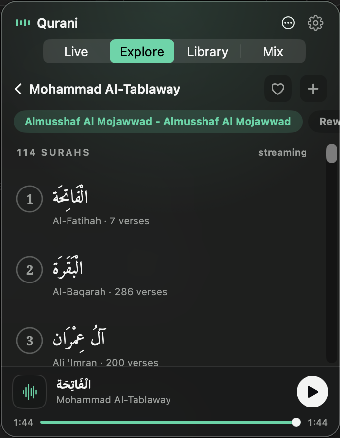

Live radio from the Haramain, a 200+ reciter catalogue you can stream at once, your own local library, and a mix that hands every surah to a different qari. Native, quiet, free.
Free · macOS 26+ · unsigned, so it needs a one-time Open Anyway on first launch

The tabs the app opens with — each does one thing, and stays out of the way.
Makkah, Madinah, Egypt's Quran Al-Kareem, and 174 always-on per-reciter stations. Dropped streams reconnect on their own; the surah shows only when the broadcast actually names it.
Browse 200+ reciters, filter by riwaya, pick a moshaf, and stream any of the 114 surahs instantly. Favourite a qari or add them to your mix pool.
Your own recordings, grouped reciter → surah. Drag files in or drop them in a watched folder; a smart tagger names them and flags whatever it's unsure of.
The signature: pick a pool of qaris and a range, and each surah lands on a different voice — only reciters who actually recorded it. Re-roll any time, save as a preset.
Every surah, a different qari.
Build a pool from your library and favourite reciters. Qurani gives each surah a random voice from it — never one who didn't record that surah.
Re-roll for a whole new recitation.
Grab the app, or paste one line. Either way it lands in your menubar.
For everyone — no tools, no Terminal.
Paste in Terminal — it installs and clears the Gatekeeper step for you.
curl -fsSL https://itwasmee.github.io/Qurani/get.sh | bash
Rather build it yourself? git clone …/Qurani.git && ./install.sh
Requirements: macOS 26 (Tahoe) or newer. Building from source also needs Xcode 26+ & Swift 6.